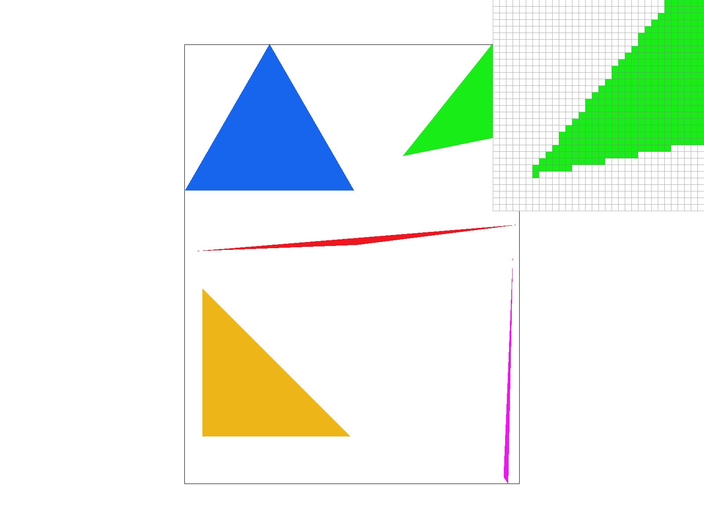
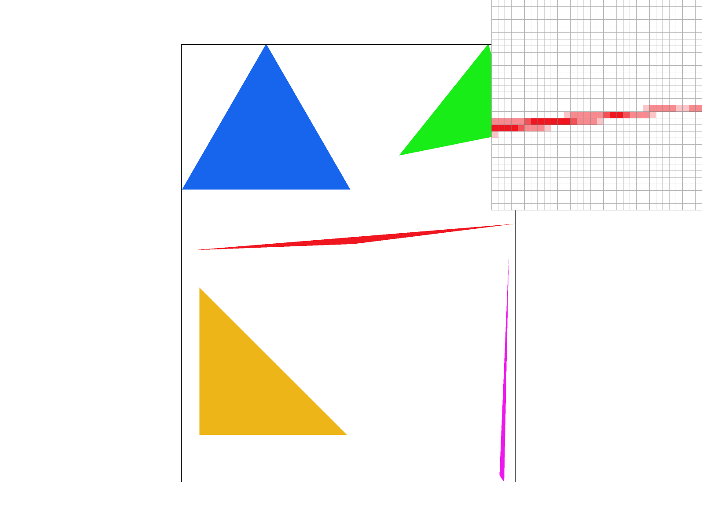
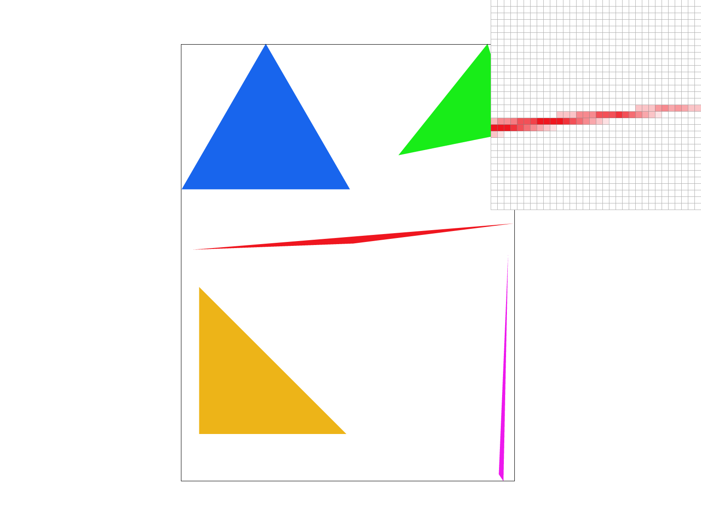
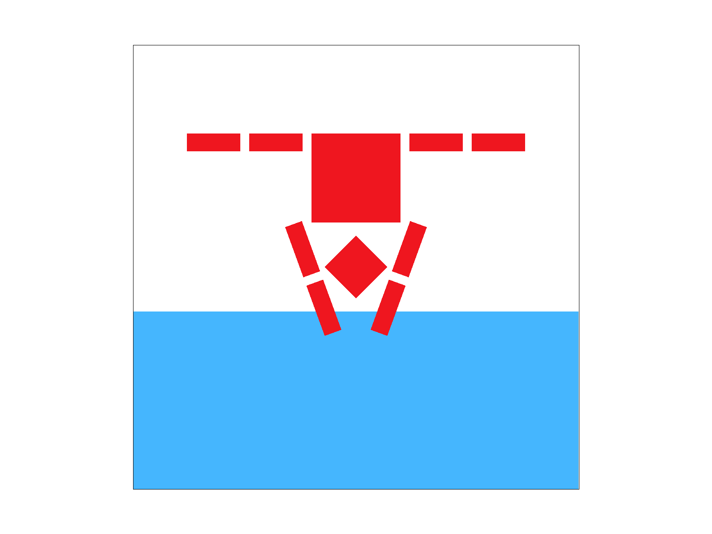
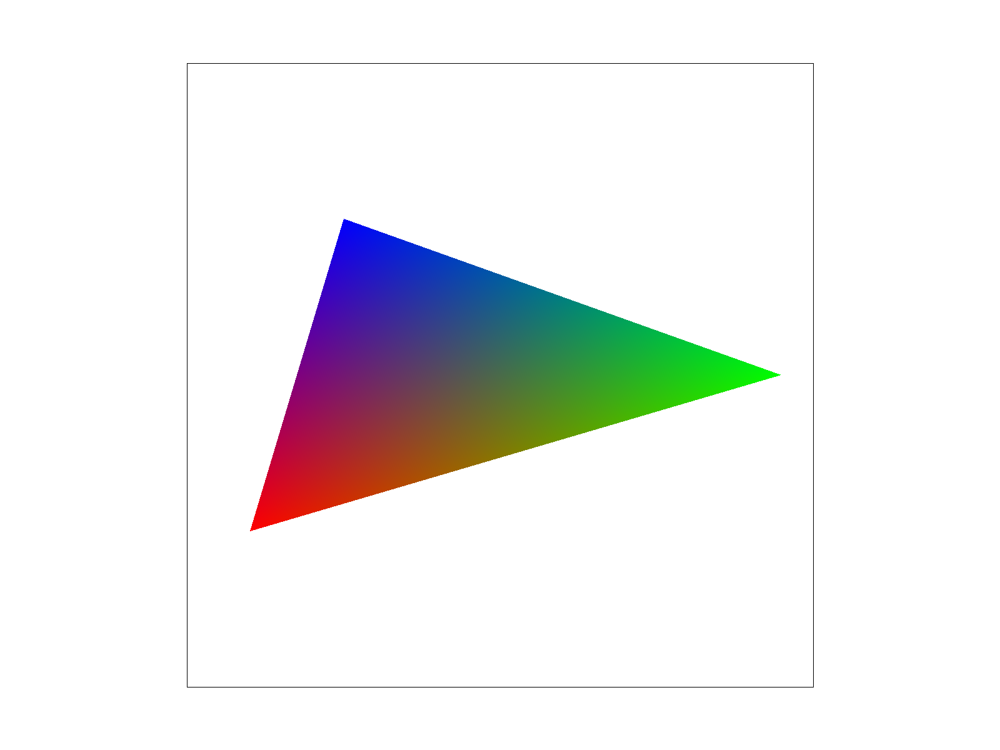
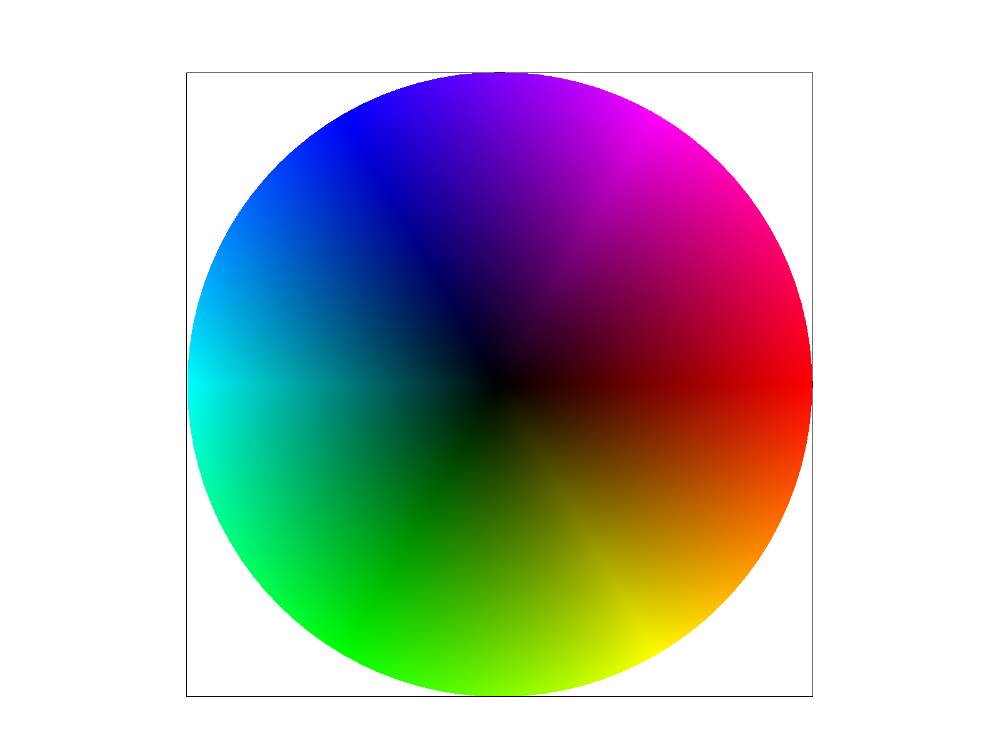

CS184/284A Spring 2025 Homework 1 Write-Up
Link to webpage:
https://cal-cs184-student.github.io/hw-webpages-lets-gooooooo-1/hw1/index.htmlLink to GitHub repository:
https://github.com/cal-cs184-student/hw-webpages-lets-gooooooo-1
Overview
Give a high-level overview of what you implemented in this homework. Think about what you've built as a whole. Share your thoughts on what interesting things you've learned from completing the homework.Task 1: Drawing Single-Color Triangles
Simply put, for each triangle, we iterated through a grid of pixels containing the triangle and checked whether the center of the pixel (x + 0.5, y + 0.5) was within the confines of the triangle. If it was, we filled the pixel with the designated color of the triangle, and if it was not, we left it with the default color. This effectively colored
the triangle pixel by pixel.
To make this check whether the pixel’s center was inside the triangle,
we utilized a geometric property of a cross-product between two vectors: the direction of a cross-product follows the right-hand rule. This means that for triangle ABC, the cross-products between AB and AC, BC and BA, and CA and CB will all possess the same direction (+ or - for 2D space) determined by the orientation of vertices (clockwise or counter-clockwise). Given a point in the triangle P, the cross-product between AB and AP, BC and BP, and CA and CP should all share the same direction as the cross-product from any of the original triangle side vectors (AB, BC, or CA) and their adjacent triangle side vectors that share the same source vertex. This essentially gives us the boolean we need to verify whether a point is inside the triangle, which is if the cross-products between the point and all of the original triangle side vectors all share the same direction as a cross-product between an original triangle side vector and its adjacent triangle side vector. We also count points that made any cross-products between it and an original triangle side vector equal zero because that just means the point lies on one of the edges of the triangle.
This calculation is done for all pixel center points in a grid that is limited to contain an x range and y range of pixels bounded by the minimum and maximum x and y positions of all the triangle vertices.
Our algorithm is no worse than one that checks each sample within the bounding box of the triangle because our algorithm is exactly that. Our algorithm iterates through a grid of pixels, checking each sample, and that grid of pixels is the triangle's bounding box. The grid of pixels' x range and y range is determined by the minimum and maximum x and y values of the triangle vertices, which means the sizes of these ranges are the least they can be while still being able to create a rectangle grid that bounds the triangle within.
|

|
Task 2: Antialiasing by Supersampling
After the selection of the sampling rate (samples per frame pixel), we resized the sample buffer to contain all the samples needed for the entirety of the frame buffer (number of frame pixels * sampling rate), essentially leaving a constant number of sample values for every frame pixel.
To enable the supersampling, we changed what initially took one sample at the center of the pixel to taking multiple samples based on the sampling rate per pixel in the rasterize triangle function. This is done by splitting the frame pixel into a square grid containing a number of squares equal to the number of samples needed and collecting a sample at the center of those smaller partitions of the frame pixel. Collecting samples, in this case, refers to doing the inside-the-triangle check at the provided center position of a frame pixel partition and filling the sample buffer at the location that refers to the provided center position with the triangle's color if the check comes out true or leaving it as the default color if the check comes out as false. After sampling is done for every frame pixel through the rasterize triangle function, the samples get resolved to the frame pixel buffer by having the values of the samples that refer to each specific frame pixel get averaged to become the one value that used frame buffer for that specific frame pixel.
Supersampling is useful because it allows us to anti-alias the triangles and shapes in general. Instead of seeing jaggies at the edges, the pixels at the edges instead are now able to take on colors that approximately average out the colors that actually occupy the pixel space. We modified the sampling process to be dynamic to the sampling rate we choose, and we modified the resolving process (from sampling buffer to frame buffer) to always take the average of the samples.
|
|

|
|
|

|
These results are observed because going from low sampling rate to high sampling increases the accuracy of the approximation of the average color within a pixel as there are more locations within pixel to take samples from. Through having more locations to sample, we can further narrow the approximation of how much of the pixel is within the triangle, allowing us to blend the colors more appropiately than simply having a solid color (white) for a pixel that still actually possess much of the colored triangle within it but not exactly at a specific location like the center of the pixel. This is why you can see pixels that were just white in picture with sampling rate 1 becoming a shade of red in pictures with higher sampling rate.
Task 3: Transforms
|

|
Cubeman is diving into a pool while doing the splits in midair.
Task 4: Barycentric coordinates
Barycentric coordinates are coordinates within the confines of a one or multidimensional space defined by vertices and can be represented as the weighted sum of the defining vertices, with the weights being the proportion of the space made with the coordinate and the other defining vertices. Through the corresponding weights of a specific barycentric coordinate, useful values like texture coordinates or color corresponding to that specific barycentric coordinate can be extracted by getting a linear combination between weights and the values corresponding to the defining vertices.
|

|
Lets say we looking a barycentric coordinate planted right on the red vertex. The proportion corresponding to the red vertex would be 1 while the proportions corresponding to the other vertices are zero. Now if we are trying to extract the color value associated with that barycentric coordinate, it would be red because the weight associated with the red vertex is 1 while all others are 0. We calculate the color by taking the proportions and multiplying them with the corresponding r,g, and b values for each of the vertex's colors and then adding them together to get final r, g, and b values. On the other hand, points at roughly the same distance from each vertex of the triangle will have roughly about equal proportions of each of the vertices leading the to not be clearer blue or red or green.
|

|
This is a color wheel generated from many triangle slices, and if it is used for linearly interpolation, coordinates closer to the center will have a stronger black color value extracted from them.
Task 5: "Pixel sampling" for texture mapping
Pixel sampling is where we take provided values for colors with respect to texture coordinates and then we use those to calculate a color output for a given pixel.
To implement this for a given pixel, first we use barycentric coordinates to get an alpha, beta, gamma factor representing how close our pixel is in the original screen coordinates to the vertices of the triangle. Then, instead of directly taking a weighted average of color samples, we first take a weighted sample of the corresponding u,v coordinates of each of the vertices, giving us a point in u, v coordinates.
In the nearest pixel sampling method, we simply find the nearest point which we have a color for (in u-v space) by rounding the u and v value then using that color. In the bilinear pixel sampling method, we find the 4 points that form a unit sized box around the u,v point that we have. Then, we take essentially a weighted average based on the u-coordinate of each of the top 2 points, then a weighted average based on the u-coordinate of each of the bottom 2 points, then a weighted average of the previous 2 averages based on the v-coordinate of each pair of points previously used.

|

|

|

|
This viewing area has columns around it which are much better rendered in the bilinear pixel sampling rather than the nearest pixel sampling as seen by the smoother edges in the bilinear pixel sampling image (the 16 sample supersampling is much smoother than the 1 sample supersampling as well). There will be large differences in places where we can see a lot of edge lines in a small area.
Task 6: "Level Sampling" with mipmaps for texture mapping
Lorem